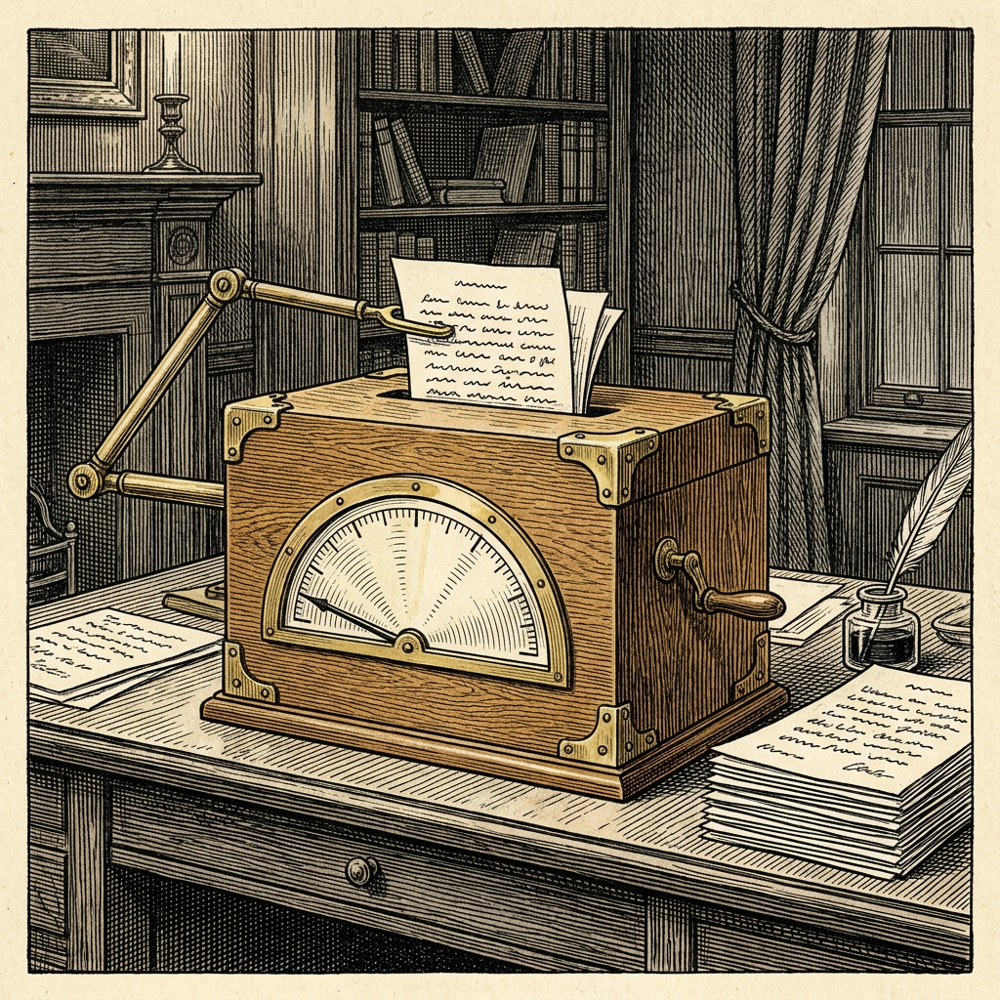

Ur N:r 3 3 oktober 2026
Maskinerna känner igen sina egna
Detektorerna kom på efterkälken

Kännarna vid Vals AI har i dagarna prövat hur väl man kan skilja människans text från maskinens. Provet bestod av privata skrifter, författade före november 2022, som sedan skrevs om av en rad maskiner. För att räknas måste en omskrivning ha ändrat mer än hälften av originalet.
Bäst lyckades maskinen Opus 5.5 från handelshuset Anthropic, med 98,38 procent balanserad träffsäkerhet. Därnäst kom maskinen Astra från handelshuset OpenAI med 95,75 procent. Båda låg över de detektorer som prövades, och av de två var Astra den billigare per skrift.
GPTZero friade samtliga mänskliga texter men fångade blott 56,3 procent av omskrivningarna. Sapling fångade 72,9 procent men bedömde bara 82,2 procent av människornas texter rätt.
Därpå lät kännarna maskinerna själva skriva om texter, för att se om de kunde lura sig själva eller Pangram. I detta försök visade sig Pangram lättare att lura än maskinerna som skrivit. ”Vi finner att de främsta modellerna ofta förmår redigera text på ett sätt som inte tillförlitligt kan upptäckas av någon detektor”, skriver Vals. Kännarna understryker dock att resultaten icke ska läsas som verktygens träffsäkerhet i praktiken.
I nr 13 dömde Pangram en människas omskrivning som maskinens, och nu har den låtit sig luras av maskinernas egna. Ortens språkvårdare, som misstänker maskinen överallt, har ännu aldrig låtit sig luras.
Källa: Vals AI, ”Has the Bitter Lesson Come for AI Detectors?”, 30 september 2026.